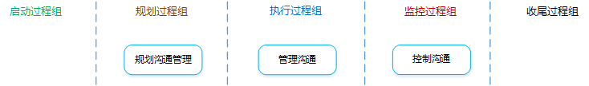
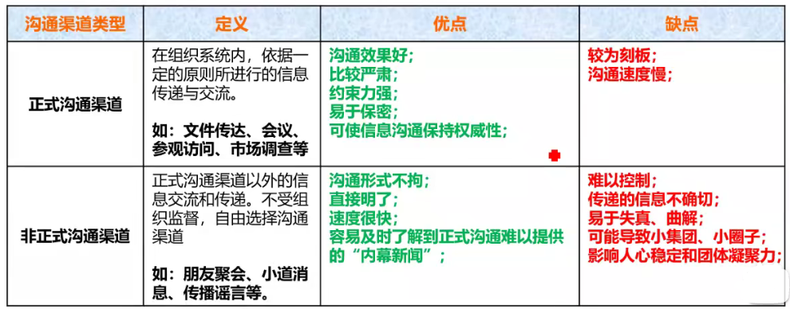
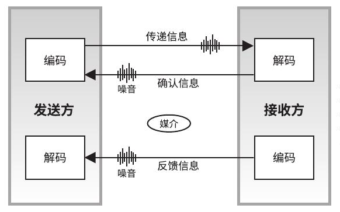

项目沟通管理

项目沟通管理是什么？：为确保项目信息及时且恰当地规划、收集、生成、存储、检索、管理、控制、监督和最终处置所需的各个过程。
沟通有哪些分类？：
内部：项目内（效率和准确、非正式的方式）
外部：客户、媒体、公众（充分和准确、正式的方式）
正式：报告、情况介绍会（正式）
非正式：电子邮件、备忘录（大多数场合）
垂直：上下级之间（速度快、准确程度高）
水平：同级之间（复杂程度高、不受控）
官方：新闻通讯、年报
非官方：私下沟通
口头语言
非口头语言
书面：清晰、易复制传播、长期保存、法律防护依据；但耗时长、灵活性差
口头：较灵活、速度快、便于双向沟通；但难以保存、正确性差、权威性低
是什么？：根据干系人的信息需要和要求及组织的可用资产情况，制定合适的项目沟通方式和计划的过程。
有什么作用？：识别和记录与干系人的最有效率和最有效果的沟通方式。
什么是有效率的沟通？：只提供所需要的信息。
什么是有效果的沟通？：以正确的形式、在正确的时间把信息提供给正确的受众，并且使信息产生正确的影响。
项目管理计划
干系人登记册
为规划与项目干系人的沟通提供信息。
事业环境因素
组织过程资产
沟通需求分析
是什么？：确定项目干系人的信息需求，包括所需信息的类型和格式，以及信息对干系人的价值。
沟通渠道：
计算公式：
分类：正式和非正式

沟通技术
是什么？：在项目干系人之间传递信息的技术。如：谈话、会议、书面文件、资料等。
影响技术选择的因素？：信息需求的紧迫性、可用性、易用性、项目环境、敏感性和保密性。
沟通模型

发送方：需确保信息的清晰性和完整性，需确认信息已被正确理解。
接收方：需正确地理解信息，需告知收悉或做出适当地回应。
5个关键要素：
5个基本状态：
沟通方法
有哪些分类？：
推式沟通
把信息发送给需要接收这些信息的特定接收方。可以确保信息的放松，但是不能确保信息送达或者被正确理解。
例如：电子邮件、传真、报告、新闻稿等。
拉式沟通
用于信息量很大或者受众很多的情况，要求接收者自主自行地访问信息内容。
例如：企业内网、经验教训数据库、知识库等。
交互式沟通
在两方或者多方之间进行信息交换，是确保全体参与者达成共识地最有效方法。
例如：会议、电话、即时通信、视频会议等。
影响方法选择的因素？：
会议
沟通管理计划
包含哪些内容？：
项目文件更新
是什么？：根据沟通管理计划，生成、收集、分发、存储、检索及最终处置项目信息的过程。
有什么作用？：促进项目干系人之间实现有效率且有效果的沟通。
沟通管理计划
工作绩效报告
工作绩效报告汇集了项目绩效和状态信息，可用于促进讨论和建立沟通。
事业环境因素
组织过程资产
沟通技术
沟通模型
沟通方法
信息管理系统
报告绩效
是什么？：收集和发布绩效信息，包括状态报告、进展测量结果及预测结果。（可简单、可详细）
简单的状态报告：包括完成百分比、每个领域的状态指示图。
详细的状态报告：可能包括
项目沟通
包含哪些内容？：绩效报告、可交付成果状态、进度进展情况、已发生的成本。
影响因素？：信息的紧急性和影响、信息传递方法、信息机密程度。
项目管理计划更新
项目文件更新
组织过程资产更新
是什么？：在整个项目生命周期中对沟通进行监督和控制的过程，以确保满足项目干系人对信息的需求。
有什么作用？：随时确保所有沟通参与者之间的信息流动的最优化。
工作绩效信息
变更请求
项目管理计划更新
项目文件更新
更新的文件可能包括（但不限于）：预测、绩效报告、问题日志。
组织过程资产更新